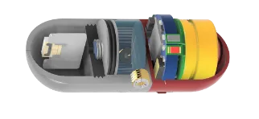
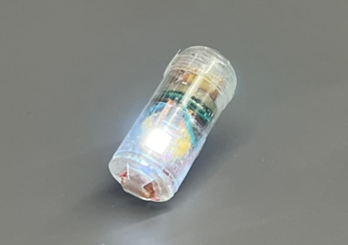
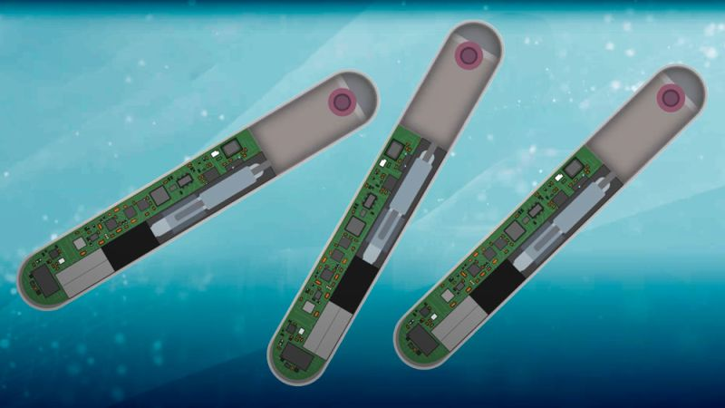

See to Reach, Feel to Grasp: Learning A Blind Grasp Reflex for Anthropomorphic Robotic Hands
Alexander Alexiev, Tzu-Yuan Lin, Sang Min Kim, Ho Jae Lee, Yonghyeon Lee, Sangbae Kim
Robotics researcher
I am a Master of Science student in Mechanical Engineering at MIT, advised by Prof. Sangbae Kim. My research focuses on proprioceptive control for dexterous manipulation, combining reinforcement learning, optimal control, tactile sensing, and custom robotic hardware.
Previously, I studied Engineering Science at the University of Toronto and worked on robot learning, medical robotics, and embedded systems.
Selected research in robotics, sensing, and medical devices.
Alexander Alexiev, Tzu-Yuan Lin, Sang Min Kim, Ho Jae Lee, Yonghyeon Lee, Sangbae Kim
Sang Min Kim, Alexander Alexiev, Tzu-Yuan Lin, Sangbae Kim, Young Min Kim, Yonghyeon Lee

Alexander Alexiev*, Jack Chen*, Karl Werner*, Giovanni Traverso
Ho Jae Lee, Yonghyeon Lee, Alexander Alexiev, Tzu-Yuan Lin, Se Hwan Jeon, Sangbae Kim
Yonghyeon Lee, Tzu-Yuan Lin, Alexander Alexiev, Sangbae Kim
Yonghyeon Lee, Tzu-Yuan Lin, Alexander Alexiev, Sangbae Kim

Alexander Alexiev*, Jack Chen*, Giovanni Traverso

Hen-Wei Huang, Peter R. Chai, et al., Alexander Alexiev, et al., Giovanni Traverso